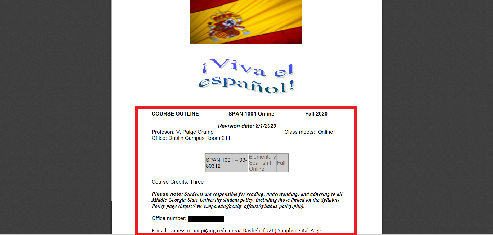
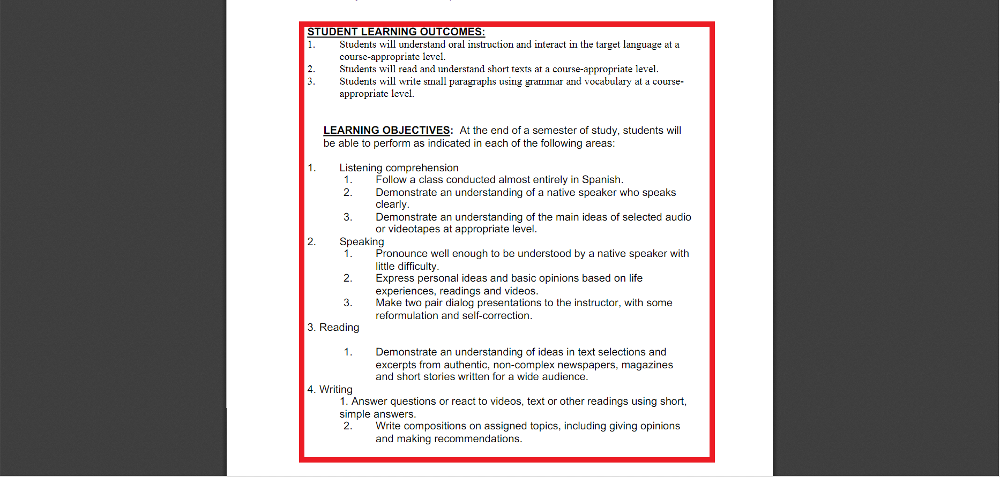
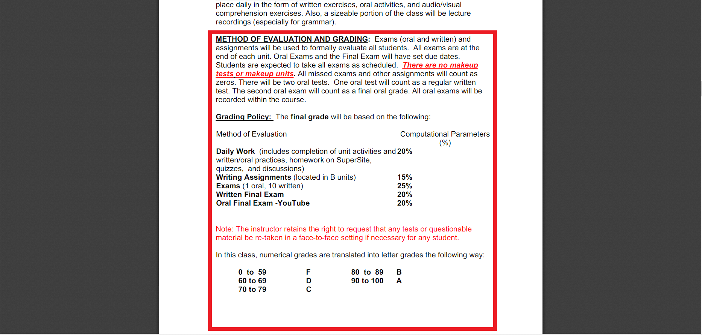
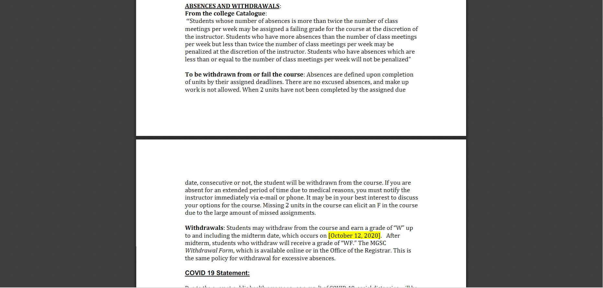

Knight Know It All
How to Navigate the Syllabus
Watch this informational video about how to navigate through a syllabus.
Also, below are some step-by-step guides if the video wasn't enough!
Step 1:
The general course information section of a syllabus lists simple information such as the course title, course number, the semester and session of the course, the instructor’s contact information, and the office hours of the instructor.
Step 2:
The detailed course information section explains information such as the prerequisites for the course, the learning outcomes for the students, required course materials, and library resources at MGA.
Step 3:
The course assessment information section outlines how assignments are graded and what is expected of each assignment that will be turned in.
Step 4:
The course expectations section lists policies and codes of conduct for students as expected from Middle Georgia State University while the instructor-specific policies section lists the general rules and expectations from the instructor of the course.
Step 5:

The tentative course schedule is the last section on a syllabus, and it outlines the semester for the course showing what assignments and tasks to expect each week of the semester and their associated due dates.